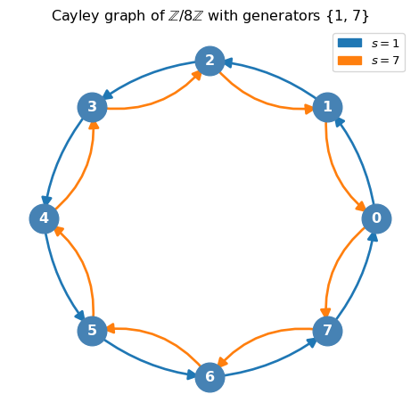
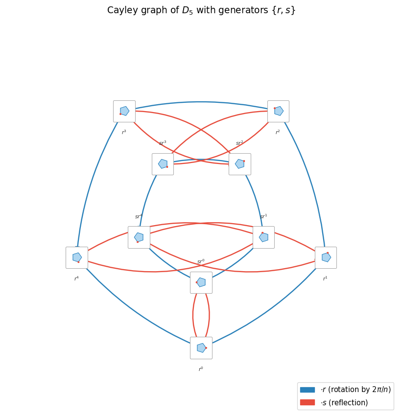
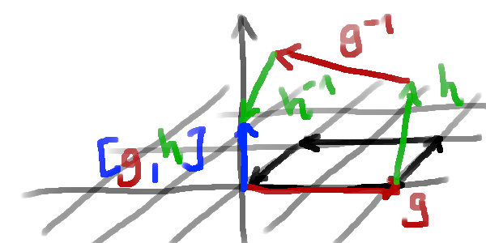
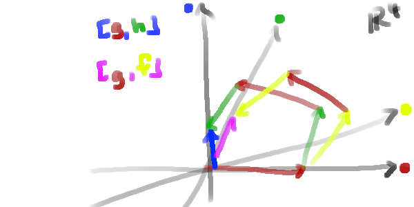
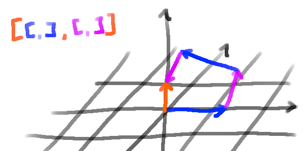

Consider the Cayley graph of \(G\) with respect to a finite generating set \(S\). We can think of \(G\) as a discrete space in which a player navigates: the player’s position at any time is an element \(p \in G\), and applying a generator \(s \in S\) moves the player from \(p\) to \(ps\).
NoteAside: Haskell notation, the fish operator, and groups as monads
The sequential application of generators (first \(s_1\), then \(s_2\), then \(s_3\), …) reads naturally as
\[
p \xrightarrow{s_1} s_1 p \xrightarrow{s_2} s_2 s_1 p \xrightarrow{s_3} \cdots
\]
which is precisely the forward-composition style of the >>> operator from Control.Category in Haskell’s base library, and the Kleisli fish operator >=> from Control.Monad:
(>=>) ::Monad m => (a -> m b) -> (b -> m c) -> (a -> m c)
Using monads and by extension the State monad, to describe groups provides an aesthetic way to think about groups. Walking on the Cayley graph is then just the State G monad: the player’s current position is the state, and each generator \(s\) corresponds to the action modify (\p -> p * s). The monad laws then encode exactly the group axioms: the left and right unit laws of >>= correspond to \(pe = ep = p\), and associativity of >>= corresponds to \((p s_1) s_2 = p (s_1 s_2)\).
This connection has been explored in the literature on categorical algebra and algebraic theories before. Every algebraic theory, including group theory, corresponds canonically to a monad, which we will not delve into here. But this justifies the use of “monadic notation” in the rest of this article, where we write \(p \ggg s\) to mean “apply generator \(s\) to position \(p\)”.
For further reading, the canonical correspondence between algebraic theories and monads was established independently by Lawvere (Lawvere 1963) and Linton (Linton 1969). The connection to computational effects (where group symmetries appear as canonical examples of stateful algebraic effects) is developed in Plotkin and Pretnar (Plotkin and Pretnar 2013).
A useful tool for understanding the structure of a group is to look at its Cayley graph with respect to a finite generating set. The Cayley graph is a directed, edge-labelled graph whose vertices are the elements of \(G\) and where we draw an edge from \(g\) to \(gs\) for each generator \(s \in S\). The Cayley graph encodes the algebraic structure of the group in a geometric way: the paths in the graph correspond to products of generators, and loops in the graph correspond to relations among the generators.
As a concrete example, here is the Cayley graph of \(\mathbb{Z}/m\mathbb{Z}\) with generating set \(S = \{1, -1\}\) (i.e. \(S = \{1, m-1\}\)):
Show code: Cayley graph of ℤ/mℤ
import numpy as npimport networkx as nximport matplotlib.pyplot as pltimport matplotlib.patches as mpatchesdef draw_cayley_graph_cyclic(m: int, generators: list[int] |None=None) ->None:""" Draw the Cayley graph of Z/mZ with respect to a given generating set. Parameters ---------- m : int The modulus, i.e. the order of the group Z/mZ. generators : list of int, optional A list of generators (elements of Z/mZ). Defaults to {1, m-1}. """if generators isNone: generators = [1, m -1] G = nx.MultiDiGraph() G.add_nodes_from(range(m))for s in generators:for g inrange(m): G.add_edge(g, (g + s) % m, generator=s)# Place nodes evenly on a circle pos = { i: (np.cos(2* np.pi * i / m), np.sin(2* np.pi * i / m))for i inrange(m) } colors = plt.rcParams["axes.prop_cycle"].by_key()["color"] fig, ax = plt.subplots(figsize=(5, 5)) nx.draw_networkx_nodes(G, pos, node_color="steelblue", node_size=600, ax=ax) nx.draw_networkx_labels( G, pos, labels={i: str(i) for i inrange(m)}, font_color="white", font_weight="bold", ax=ax, )for idx, s inenumerate(generators): edges = [(g, (g + s) % m) for g inrange(m)] nx.draw_networkx_edges( G, pos, edgelist=edges, edge_color=colors[idx %len(colors)], arrows=True, arrowsize=18, width=2, connectionstyle=f"arc3,rad={0.15* (idx +1)}", ax=ax, ) legend_handles = [ mpatches.Patch(color=colors[i %len(colors)], label=f"$s = {s}$")for i, s inenumerate(generators) ] ax.legend(handles=legend_handles, loc="upper right") ax.set_title(rf"Cayley graph of $\mathbb{{Z}}/{m}\mathbb{{Z}}$"f" with generators {set(generators)}" ) ax.axis("off") plt.tight_layout() plt.show()draw_cayley_graph_cyclic(m=8)

Cayley graph of \(\mathbb{Z}/m\mathbb{Z}\) with generators \(S = \{1, m-1\}\)
As a second example, consider the dihedral group \(D_n\) of symmetries of a regular \(n\)-gon. It has order \(2n\) and is generated by a rotation \(r\) (by \(2\pi/n\)) and a reflection \(s\), subject to \(r^n = s^2 = e\) and \(srs^{-1} = r^{-1}\). Each node in the Cayley graph below shows the current orientation of the polygon under that group element:
Show code: Cayley graph of D_n
import ioimport numpy as npimport networkx as nximport matplotlib.pyplot as pltimport matplotlib.patches as mpatchesfrom matplotlib.offsetbox import AnnotationBbox, OffsetImagedef make_polygon_image(n: int, rotation: float, reflected: bool, size: int=80) -> np.ndarray:"""Render a small RGBA image of a regular n-gon in its current symmetry state.""" dpi = size fig_s, ax_s = plt.subplots(figsize=(1, 1), dpi=dpi) ax_s.set_xlim(-1.6, 1.6) ax_s.set_ylim(-1.6, 1.6) ax_s.set_aspect("equal") ax_s.axis("off") fig_s.patch.set_alpha(0) ax_s.patch.set_alpha(0) angles = np.linspace(0, 2* np.pi, n, endpoint=False) + rotation x = np.cos(angles) y = np.sin(angles)if reflected: x =-x # reflect across y-axis polygon = plt.Polygon(list(zip(x, y)), closed=True, facecolor="#aed6f1", edgecolor="#2e86c1", linewidth=2, ) ax_s.add_patch(polygon)# Mark vertex 0 with a red dot to track orientation ax_s.plot(x[0], y[0], "o", color="#e74c3c", markersize=6, zorder=5) fig_s.canvas.draw() buf = fig_s.canvas.buffer_rgba() img = np.frombuffer(buf, dtype=np.uint8).reshape( fig_s.canvas.get_width_height()[::-1] + (4,) ).copy() plt.close(fig_s)return imgdef draw_cayley_graph_dihedral(n: int) ->None:""" Draw the Cayley graph of the dihedral group D_n (order 2n) with generators r (rotation by 2π/n) and s (a fixed reflection). Elements are represented as pairs (k, f) where k ∈ ℤ/nℤ is the rotation exponent, f ∈ {0,1} indicates whether a reflection has been applied. So (k, 0) = r^k and (k, 1) = s·r^k. Right-multiplication rules: (k, f) · r = (k+1 mod n, f) (k, 0) · s = (n-k mod n, 1) (k, 1) · s = (n-k mod n, 0) """ nodes = [(k, f) for f inrange(2) for k inrange(n)] node_index = {node: i for i, node inenumerate(nodes)} G = nx.MultiDiGraph() G.add_nodes_from(range(len(nodes)))for k inrange(n):for f inrange(2):# right-multiply by r G.add_edge(node_index[(k, f)], node_index[((k +1) % n, f)], gen="r")# right-multiply by s G.add_edge(node_index[(k, 0)], node_index[((n - k) % n, 1)], gen="s") G.add_edge(node_index[(k, 1)], node_index[((n - k) % n, 0)], gen="s")# Two concentric rings: outer = rotations (f=0), inner = reflections (f=1) outer_r, inner_r =2.8, 1.4 pos = {}for k inrange(n): angle =2* np.pi * k / n - np.pi /2 pos[node_index[(k, 0)]] = (outer_r * np.cos(angle), outer_r * np.sin(angle)) pos[node_index[(k, 1)]] = (inner_r * np.cos(angle), inner_r * np.sin(angle)) fig, ax = plt.subplots(figsize=(9, 9)) ax.set_xlim(-4.2, 4.2) ax.set_ylim(-4.2, 4.2) ax.set_aspect("equal") ax.axis("off") r_edges = [(u, v) for u, v, d in G.edges(data=True) if d["gen"] =="r"] s_edges = [(u, v) for u, v, d in G.edges(data=True) if d["gen"] =="s"] nx.draw_networkx_edges( G, pos, edgelist=r_edges, edge_color="#2980b9", arrows=True, arrowsize=14, width=1.8, connectionstyle="arc3,rad=0.12", ax=ax, ) nx.draw_networkx_edges( G, pos, edgelist=s_edges, edge_color="#e74c3c", arrows=True, arrowsize=14, width=1.8, connectionstyle="arc3,rad=0.25", ax=ax, ) zoom =0.38for node_id, (k, f) inenumerate(nodes): img = make_polygon_image(n, rotation=2* np.pi * k / n, reflected=bool(f)) imagebox = OffsetImage(img, zoom=zoom) ab = AnnotationBbox(imagebox, pos[node_id], frameon=True, bboxprops=dict(boxstyle="round,pad=0.15", facecolor="white", edgecolor="#aaaaaa", linewidth=0.8)) ax.add_artist(ab)# Label node below the image label =rf"$r^{k}$"if f ==0elserf"$sr^{k}$" x, y = pos[node_id] offset =-0.45if f ==0else0.45 ax.text(x, y + offset, label, ha="center", va="center", fontsize=8, color="#333333") legend_handles = [ mpatches.Patch(color="#2980b9", label=r"$\cdot r$(rotation by $2\pi/n$)"), mpatches.Patch(color="#e74c3c", label=r"$\cdot s$(reflection)"), ] ax.legend(handles=legend_handles, loc="lower right", fontsize=11) ax.set_title(rf"Cayley graph of $D_{{{n}}}$ with generators $\{{r, s\}}$", fontsize=14, pad=12, ) plt.tight_layout() plt.show()draw_cayley_graph_dihedral(n=5)

Cayley graph of \(D_n\) with generators \(\{r, s\}\)
The dihedral example already hints at the power of the commutator: \([r, s] \neq e\) precisely because applying \(r\), then \(s\), then \(r^{-1}\), then \(s^{-1}\) does not return you to where you started. In fact, we have \([D_n, D_n] = \langle r^2 \rangle\), the subgroup of rotations by even multiples of \(2\pi/n\). In the animation about with Robert walking around in “Algebraland”, you can quite easily observe this phenomenon: If Robert walks forward, then rotates 180 degrees, then walks backward, then rotates back, he ends up in the same state as if he had walked forward twice. This is in contrast to the standard grid \(\mathbb{Z}^2\) where the same loop would return you to your exact starting position.
A more striking example is the discrete Heisenberg group\(H_3(\mathbb{Z})\). Its elements are triples \((x, y, z) \in \mathbb{Z}^3\) with the non-abelian group operation
Take generators \(a = (1,0,0)\) and \(b = (0,1,0)\). A direct computation shows
\[
[a, b] = a \ggg b \ggg a^{-1} \ggg b^{-1} = (0, 0, 1),
\]
so traversing the loop \(a \to b \to a^{-1} \to b^{-1}\) (right, up, left, down) displaces you by one step along \(z\). The Cayley graph therefore “spirals” upward: what looks like a flat \(\mathbb{Z}^2\) grid is secretly twisted in a third dimension.
Show code: 3D Heisenberg Cayley graph
import numpy as npimport plotly.graph_objects as gofrom collections import dequedef draw_heisenberg_cayley_graph(depth: int=3) ->None:""" Interactive 3D Cayley graph of the discrete Heisenberg group H_3(Z). Elements are triples (x, y, z) in Z^3 with multiplication (x1, y1, z1) * (x2, y2, z2) = (x1+x2, y1+y2, z1+z2 + x1*y2). Generators: a = (1, 0, 0) -- step in +x a' = (-1, 0, 0) -- step in -x b = (0, 1, 0) -- step in +y b' = (0, -1, 0) -- step in -y Commutator [a, b] = (0, 0, 1): the loop right->up->left->down lifts one step along z, illustrating the non-trivial commutator. """def mul(p, q):return (p[0] + q[0], p[1] + q[1], p[2] + q[2] + p[0] * q[1]) gens = {"a": ( 1, 0, 0),"a⁻": (-1, 0, 0),"b": ( 0, 1, 0),"b⁻": ( 0, -1, 0), } gen_colors = {"a": "#2980b9","a⁻": "#85c1e9","b": "#e74c3c","b⁻": "#f1948a", } gen_labels = {"a": "a (x → x+1)","a⁻": "a⁻¹ (x → x−1)","b": "b (y → y+1)","b⁻": "b⁻¹ (y → y−1)", }# BFS from origin, collecting all nodes reachable within `depth` steps origin = (0, 0, 0) visited: dict[tuple, int] = {origin: 0} queue: deque[tuple] = deque([(origin, 0)]) edges_by_gen: dict[str, list] = {g: [] for g in gens}while queue: node, d = queue.popleft()if d >= depth:continuefor gname, gval in gens.items(): nbr = mul(node, gval) edges_by_gen[gname].append((node, nbr))if nbr notin visited: visited[nbr] = d +1 queue.append((nbr, d +1)) nodes =list(visited.keys()) nx_vals = [n[0] for n in nodes] ny_vals = [n[1] for n in nodes] nz_vals = [n[2] for n in nodes] fig = go.Figure()# One line trace per generator (so the legend is clean)for gname, edge_list in edges_by_gen.items(): ex, ey, ez = [], [], []for (x1, y1, z1), (x2, y2, z2) in edge_list: ex += [x1, x2, None] ey += [y1, y2, None] ez += [z1, z2, None] fig.add_trace(go.Scatter3d( x=ex, y=ey, z=ez, mode="lines", line=dict(color=gen_colors[gname], width=3), name=gen_labels[gname], hoverinfo="none", ))# Nodes, coloured by z to make the twist visible fig.add_trace(go.Scatter3d( x=nx_vals, y=ny_vals, z=nz_vals, mode="markers", marker=dict( size=5, color=nz_vals, colorscale="Viridis", colorbar=dict(title="z", thickness=14), showscale=True, ), hovertemplate="(%{x}, %{y}, %{z})<extra></extra>", name="elements", showlegend=False, )) fig.update_layout( title=("Cayley graph of the discrete Heisenberg group H₃(ℤ)<br>""<sup>[a, b] = (0,0,1): the loop a→b→a⁻¹→b⁻¹ lifts one step along z</sup>" ), scene=dict( xaxis_title="x", yaxis_title="y", zaxis_title="z (twist / commutator)", xaxis=dict(showbackground=True, backgroundcolor="#f8f9fa"), yaxis=dict(showbackground=True, backgroundcolor="#f0f3f4"), zaxis=dict(showbackground=True, backgroundcolor="#eaf2ff"), ), margin=dict(l=0, r=0, b=0, t=60), legend=dict(itemsizing="constant"), height=600, ) fig.show()draw_heisenberg_cayley_graph(depth=3)
Interactive 3D Cayley graph of the discrete Heisenberg group \(H_3(\mathbb{Z})\)
And here is a drawing from my notes, where it may happen that a player traversing a closed loop in the Cayley graph does not return to their starting position (essentially this boils down to the discrete Heisenberg group example above):
player walks in circle
The commutator subgroup \([G,G]\) captures precisely these displacements: the set of all elements reachable by such loops (shown in blue):

commutator subgroup
We can iterate this process and look at the commutator of the commutator, and so on. This gives us the derived series of a group:
This iterated structure can be visualized as follows:

first commutator in derived series

second commutator group in derived series
Application to Astrophysics
A quasar (short for quasi-stellar object, QSO) is an extremely luminous active galactic nucleus (AGN) powered by a supermassive black hole surrounded by an accretion disk. As matter falls into the black hole, it releases enormous amounts of energy, making quasars among the brightest persistent sources in the observable universe — often outshining the entire galaxy that hosts them. Most quasars are found at cosmological distances and are therefore observed as they existed billions of years ago.
Here we can see that as matter falls into the black hole by rotation (analogous to applying a generator \(a\), then \(b\), then \(a^{-1}\), then \(b^{-1}\) — so walking in a loop along the acretion disk), the system does not return to its original state but instead “shoots” a jet of plasma along the axis of rotation. We may model Positions on the acretion disk as elements of a group generated by \(a\) and \(b\), and the jet as the commutator \([a, b]\) which does not lie in the \(\text{span}\{a, b\}\).
Further ideas
I am unsure if this is actually deeply connected or not, but I came across this idea while watching this YouTube video by Zeno Rogue:
Since thinking about this some more, I noticed that Nil geometry (one of Thurston’s eight 3-dimensional geometries) is modeled on the continuous Heisenberg group\(H_3(\mathbb{R})\), equipped with a left-invariant Riemannian metric.
References
Lawvere, F. William. 1963. “Functorial Semantics of Algebraic Theories.” PhD thesis, Columbia University.
Linton, Fred E. J. 1969. “An Outline of Functorial Semantics.” In Seminar on Triples and Categorical Homology Theory, 80:7–52. Lecture Notes in Mathematics. Berlin, Heidelberg: Springer.
Plotkin, Gordon, and Matija Pretnar. 2013. “Handling Algebraic Effects.” In Logical Methods in Computer Science. Vol. 9. 4. https://doi.org/10.2168/LMCS-9(4:23)2013.